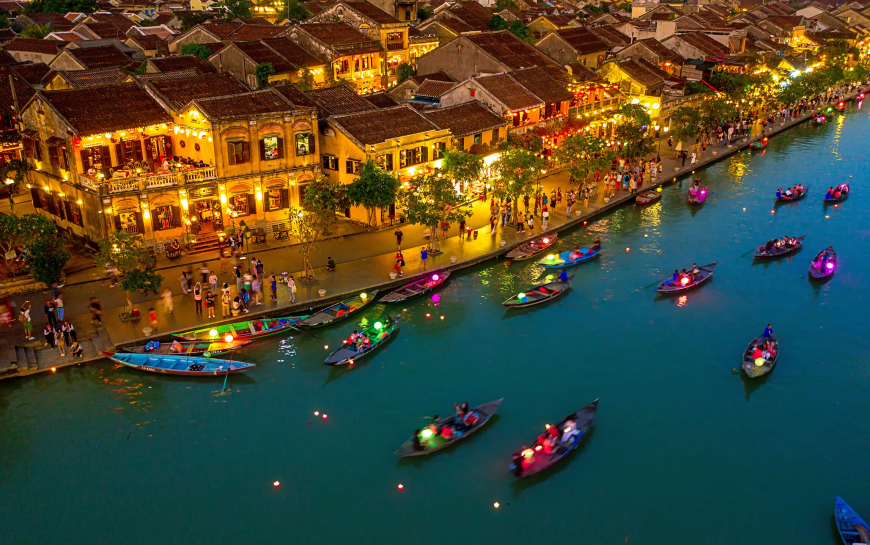

Hội An - Quảng Nam
Hội An là một viên ngọc cổ kính của miền Trung Việt Nam, nơi lưu giữ vẻ đẹp vượt thời gian với những con đường lát đá, những ngôi nhà cổ hàng trăm năm tuổi và ánh đèn lồng lung linh mỗi đêm. Được UNESCO công nhận là Di sản Văn hóa Thế giới từ năm 1999, Hội An thu hút du khách không chỉ bởi vẻ đẹp kiến trúc mà còn bởi bầu không khí yên bình, con người thân thiện và nền văn hóa đa dạng.
Dạo bước trên phố cổ, du khách sẽ được đắm mình trong không gian hoài cổ với tiếng rao hàng, mùi hương trầm và sắc màu rực rỡ từ những chiếc đèn lồng. Hội An còn nổi tiếng với các làng nghề truyền thống như làm đèn lồng, dệt vải, làm gốm... cùng nền ẩm thực phong phú được bạn bè quốc tế yêu thích.
Bối cảnh lịch sử
Hội An từng là một thương cảng quốc tế sầm uất từ thế kỷ 15 đến thế kỷ 19, thu hút thương nhân từ Trung Quốc, Nhật Bản, Bồ Đào Nha, và các nước phương Tây khác. Sự giao thoa văn hóa giữa các dân tộc đã tạo nên nét đặc trưng riêng biệt cho Hội An, thể hiện rõ qua kiến trúc nhà cổ, hội quán và ẩm thực. Dù trải qua nhiều biến động lịch sử và thời gian, phố cổ Hội An vẫn giữ được gần như nguyên vẹn cấu trúc ban đầu, là minh chứng sống động cho một thời kỳ hoàng kim của giao thương quốc tế.
Đặc điểm nổi bật
- Phố cổ với nhà gỗ, mái ngói âm dương truyền thống
- Chùa Cầu - biểu tượng của Hội An
- Đêm phố cổ với ánh sáng lung linh từ hàng ngàn chiếc đèn lồng
- Ẩm thực phong phú: cao lầu, mì Quảng, bánh bao - bánh vạc
- Gần biển Cửa Đại, An Bàng thích hợp nghỉ dưỡng
- Du lịch trải nghiệm: làm đèn lồng, học nấu ăn truyền thống
- Di chuyển dễ dàng đến Đà Nẵng, Mỹ Sơn
Gợi ý lịch trình
Ngày 1: Khám phá phố cổ, Chùa Cầu, bảo tàng Hội An
Ngày 2: Tham quan làng gốm Thanh Hà, làng rau Trà Quế, nghỉ ngơi tại bãi biển An Bàng
Ngày 3: Tham gia lớp học nấu ăn truyền thống, mua sắm tại chợ Hội An, dạo thuyền trên sông Hoài buổi tối